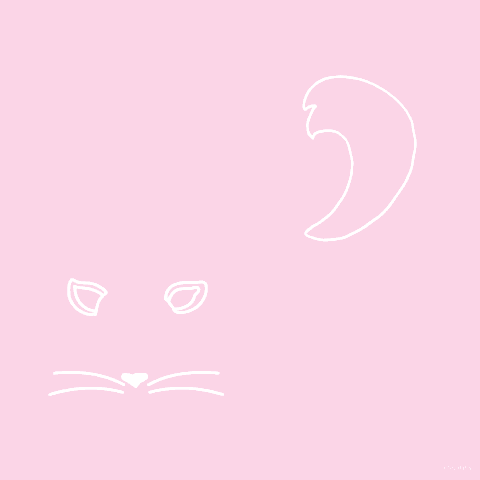
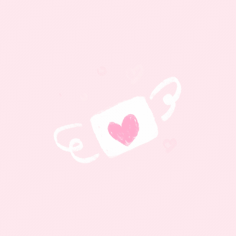

I worked with Cat remotely with this lab. We were able to communicate via text and were able to finish it on time. This lab was kind of difficult because I wasn't sure if we had to download someone or use a bootstrap theme. I decided to use a bootstrap theme and customize it to fit this lab.
The goal of this lab was to try and use bootstrap and have it look accessible on computer and on other devices.
There has not been a lot of challenges. It was mostly picking a theme and figuring out how the code works.
All done
Check it out!
:)